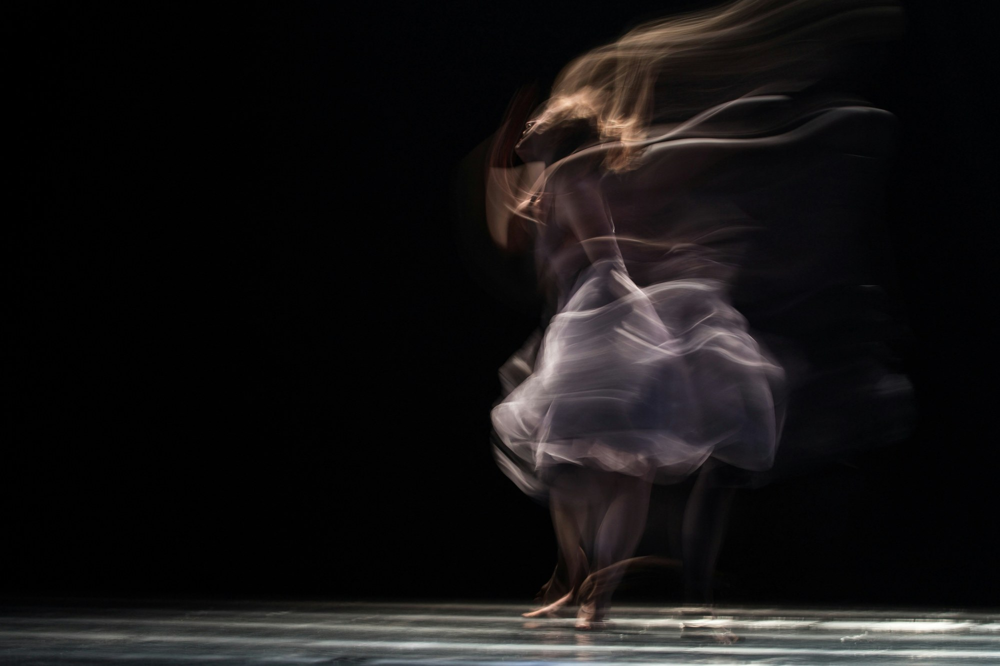

Dance and Movement ClassesAdult
Adult
Ballet
Classes run alongside the school term
Led by Alexandra Tylee (Miss Ali)

All levels
Tuesday

Alexandra TyleeBallet &
Ballet &
Contemporary Dance
In Melbourne, Alexandra taught for six years at Hawthorn School of Dance, working with students of all ages across ballet, contemporary, pointe, tap and jazz. Alongside teaching, she performed with Melbourne Dance Theatre, quickly becoming a principal dancer with them and performing both the White and Black Swan in Swan Lake. She later produced Parallel Connections for the Melbourne Fringe Festival, a collaborative work with Michael Pappalardo. This collaboration led to two years dancing and choreographing with Melbourne City Ballet which she helped to found.
About AlexandraAdult dance
Add me to your mailing list
Join the mailing list
Receive adult dance updates from Alexandra. Open the email below and send your request to join.